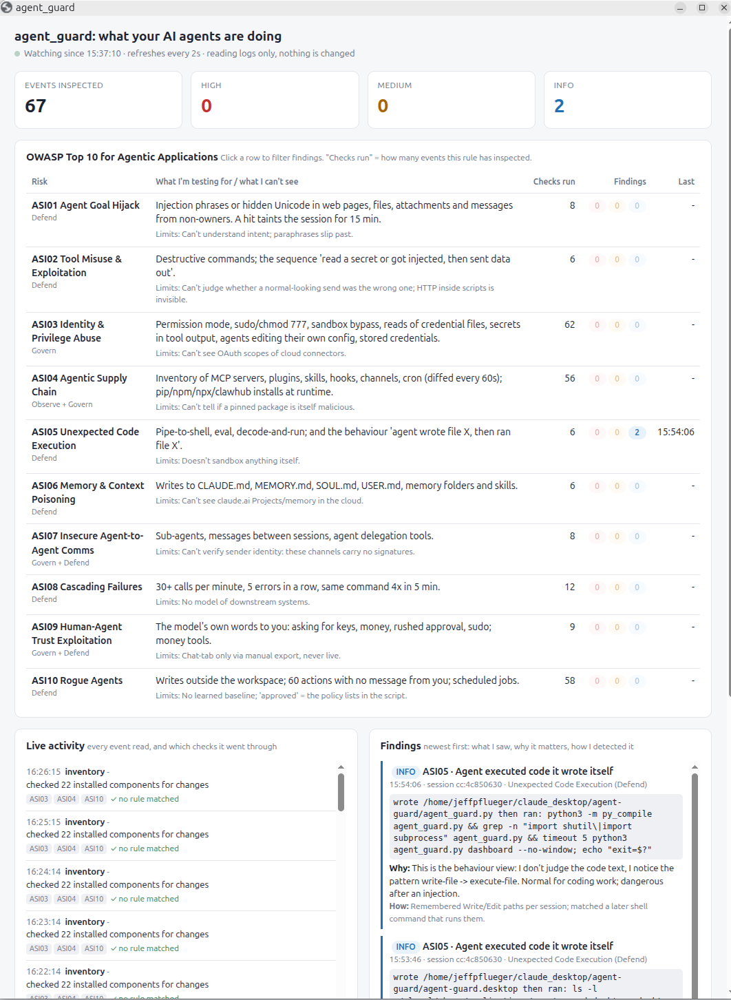

Agent Guard - Vibe Coding A Simple Agentic AI Governance and Security Script
October 31, 2026
I’ve written a lot of programs. In a bunch of different languages: Machine language when I was in middle school. Perl back in the day. PHP. Python. Built a lot of pages with HTML, javascript, etc etc
But I’d never call myself really a programmer. Today especially when so much can be vibe coded.
But what I love about programming is taking a big idea and breaking it down to the discrete instructions to make it so.
If you want to get into the weeds to learn something, sometimes trying to write a program to do the thing is the best way to learn the specifics.
So today I am interested in learning more about the OWASP Top 10 For Agentic Applications 2026 and the challenges that a platform built to manage these risks would face.
I outlined the top ten security vulnerabilities here
Now let’s learn about the challenges that a platform built to manage these risks would face.
Before we get to specifics of what I’d like Claude to do, at I high level:
I want Claude to build me an application that is:
- A minimally viable product (MVP). All procedural. No reliance on ML
- Written in Python so I can understand what it is doing.
- Educational - the goal of this application is as much my learning as it is managing security risks.
- Comment the crap out of the code and explain to me why and what it is doing.
- Provide for me a window where I can see real-time what the code is monitoring and doing as I work so I can learn on an ongoing basis.
Now the specifics. I want the application to use the table here of the Top 10 and:
- Built me a security monitoring platform for Agentic AI running on my Ubuntu workstation.
- I want it to monitor specifically Open Claw and Claude Desktop - both of which I use on my Ubuntu AI workstation.
- It needs to have a dashboard that is visible of each of the OWASP risks, what’s being tested (and what it can’t test), How many checks it has run and the outcomes of those checks categorized by risk (High, medium, Information)
So Claude Built Agent Guard

Pretty cool app now running on my Ubuntu workstation and informing me when things happen.
I’ll write up what I learned in the next post